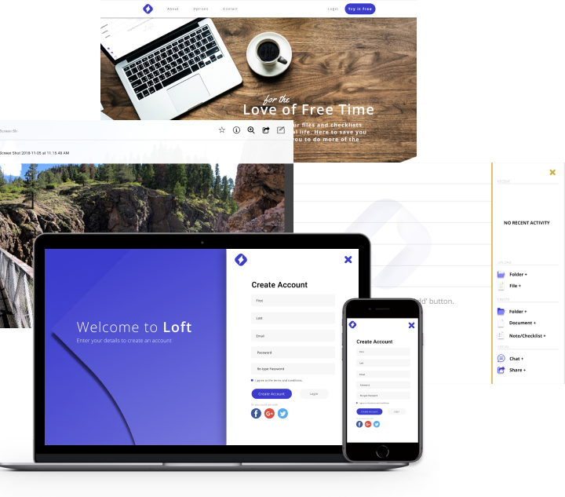
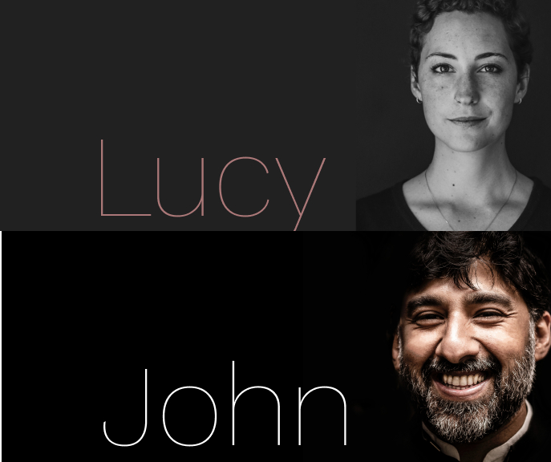
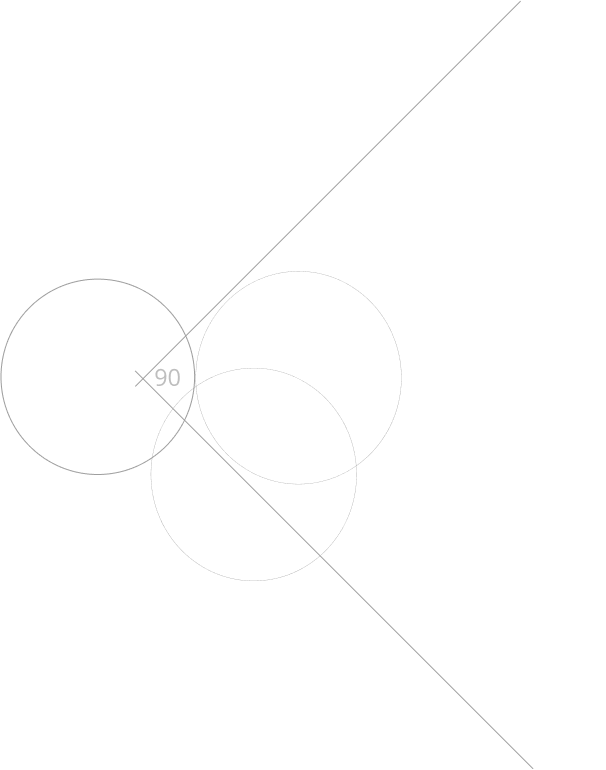

The Problem
1. Saving content found on the web. 2. Organizing that content using things like categories, tags, groups, and/or folders. 3. Creating content (notes, documents, maybe spreadsheets?). 4. Uploading files (videos, images, PDFs, etc.) from a computer
or mobile device. 5. Sharing content with other individuals/organizations.
The Solution
A simple, inviting product allowing any user to get their tasks completed, enjoy the experience and feel refreshed at the end. Loft is designed to connect with the user on a personal level but at the same time be efficient and effective in any
business setting. My focus has been to find the right combination of features to meet the needs of a particular audience. The result is Loft, a light and fun feeling cloud storage app. Even with so many options I still saw a gap in the market
for a fun and simple product that met the individuals need but also delivered enough functionality for the business realm.

The Process
User Research
I conducted a survey to gather critical data from real individuals about the problems they face and the goals they have in using cloud storage applications.
User Research Trends
The majority of survey participants used cloud storage for personal use and to share content with
friends and family. Ages ranged from 19 to 50 and there’s an even split between male and female users. Google Drive was the most popular product on the market and most participants didn’t pay for their cloud storage. 30% of participants wanted improved grouping/organization features.
Competitive Analysis
Through extensive research and analysis of the current marketplace I was able to find many
strengths and weaknesses. After identifying the features, target audience, and prices, I performed a basic SWOT analysis of three competitors. This information allowed me to see potential opportunities for a new product.
User Personas
Two users with distinct roles were interviewed about their motivations, goals and frustrations. John often finds upload speeds too slow and found this made it harder to be efficient while trying to work. Lucy found most products “confusing” with too many options and wanted a product that made sense up front due to her busy lifestyle.

Branding
I felt that this brand needed to connect with the user emotionally by bringing them home to a wonderful nostalgia of when they were young and life was simple and at the same time be simple and easy to understand. I wanted the brand to be fun and enjoyable even in a business setting while remaining efficient. During my analysis of Google Drive(the most used storage product in my survey) I noticed that their branding approach didn’t primarily show the product but rather show people outside being active, sharing a meal and also personal items, creating a very personal and inviting brand and therefore product.

Preference Testing
Next, using UsabilityHub, I took a few design aspects that I was struggling to decide on, uploaded the different screens and shared a link with as many individuals as possible. The data collected gave me confidence to move forward and helped remove any personal preferences that weren’t necessarily the best option or direction.